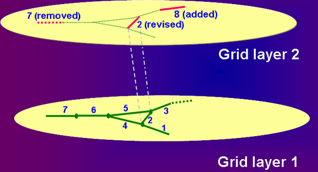

Overview:
DSM2 batches input data into groups or "layers" in order to
achieve the following goals:
- To group input into cohesive packages with similar content(examples: the
standard grid, sdip operating rules).
- To visualize which items are changed when a new group of inputs is
added to an existing simulation.
- To facilitate a permissions-based data stewardship of the
contents of the layers: only the owner can change the contents.
For example, consider the two layers of channels in the figure below.
The first layer defines seven channels and would have seven entries in the GUI.
This might represent a "base" grid. The second layer changes the properties of Channel 2,
adds a Channel 8 and removes Channel 7. The second layer will have only three entries,
shown in red. These entries represent the changes relative to Layer 1,
and presumably are thematically related.

Layer Overriding
Layer overriding occurs when the same data item is defined
in multiple layers in the same model. The layers in the model are displayed in the
Layer Panel. Higher numbers take precendence over lower ones,
and you can use actions in the layer panel context menu to
reorder the layers in your model.
Identifiers
Whether two items represent the same data item depends on the identifier
for the table, which is some combination of columns that uniquely identify the item using
a name or number. Identifier columns are shaded slightly and are identified in the
documentation for the data view that holds the table.
Top-level Tables
When parent-child tables are present in the data view
(e.g., Channels, Cross Section, Cross Section Layer), overriding is done at the level of
top-level tables. Top level tables are identified in the documentation, and
have a
layer column. When you over-ride a top-level table, its sub-table information
is completely replaced. So, for instance, if you replace Channel 9 in a low layer with
a new dredged Channel 9 in a higher layer, nothing about the old Channel 9 will
ever be read in by the model. In the Data View display, the overridden item will be displayed
with an obvious light font to show that it has been replaced.
The USE column
Occasionally, the motivation for overriding an item is to eliminate it. You can do
this on any top-level table that has a USE column -- just uncheck the check box
and it is as if the item never existed. The model will never read it. Items that have
been eliminated in this way are shown in italics.
Layer Panel
The layer panel is a table of layers in the bottom left of the GUI. It displays all the layers of the
component type of the current data view (such as
grid or
input)
that are included in the current model. When you select one or more
layers in the layer panel, you will change the layers that are actively
displayed in the current data view. Right clicking on the layer panel
will show a context menu with many important actions, such as adding
a layer, creating a layer or selecting an editing layer.
Layers in the Data View
When you select active layers in the layer panel, data from
those layers will be shown in the data view. You can select whatever layers will
help you concentrate on the important items for your work. The data view
display in the right of the GUI makes it easy to identify data that have definitions
in more than one layer. Data that are overridden are shown in a light font color.
Data that override